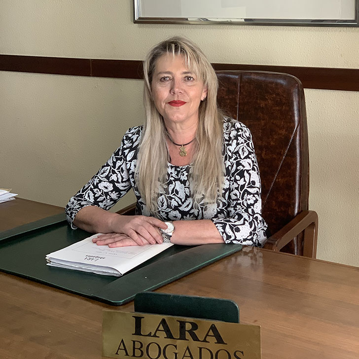

Perfil profesional
María de la O Lara Hernández
Abogada experta en Derecho Civil, Familia y Sucesiones · Ejerciente desde 1990.

Trayectoria
Dirección y atención jurídica personal
Licenciada en Derecho por la Universidad de Granada. Ejerce la abogacía desde 1990.
Formó parte de la asesoría jurídica de la empresa Ávila Rojas entre 1993 y 2002. Desde 2002 es gerente de Lara Abogados.
Áreas: Derecho Civil, Familia y Sucesiones.
Formación: Licenciatura en Derecho, Universidad de Granada.
Experiencia: Ejerciente desde 1990.
Teléfono: 649 84 15 18
Áreas relacionadas
Derecho Civil · Derecho de Familia · Herencias y Sucesiones
Solicitar consultaPerfil elaborado a partir de la información profesional facilitada por el despacho. Última revisión: agosto de 2026.